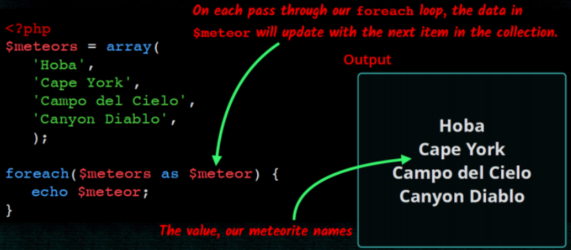
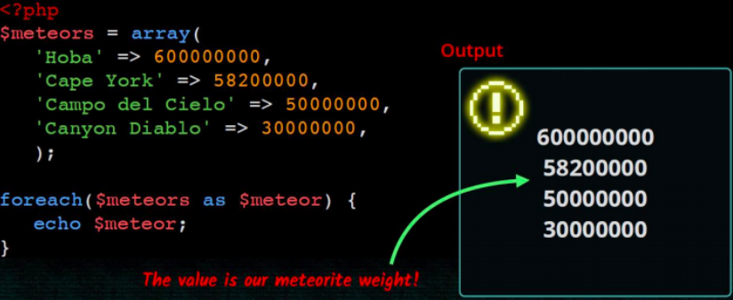

3. Maneig d'arrays
Introducció
Un array és un tipus de dades que ens permet emmagatzemar diversos valors. Per tal d'accedir a un valor utilitzarem una clau. Les claus poden ser nombres o textos (arrays associatius). Si no indiquem cap clau, a cada element se li associarà una clau numèrica correlativa.
Array indexat
Crear array
- Podem crear un array buit de dues formes:
$noms = array();
$noms = [];
- Si volem assignar valors al array en el moment de crear-ho:
$noms = array('Sandra', 'Pedro', 'Andrea');
$noms = ['Sandra', 'Pedro', 'Andrea'];
Mostrar el contingut d'un array
Si intentem mostrar el contingut d'un array amb echo no obtindrem les dades que hi ha dins del array. En lloc d'açò podem utilitzar la funció print_r:
print_r($noms);
Però si necessitem donar-li format als continguts del array, haurem de recórrer-ho amb un bucle i anar mostrant element a element.
Afegint elements al array
Podem afegir elements al array utilitzant claudàtors buits. La clau d'aquests elements serà el següent índex numèric disponible.
$noms[]='Raul'; $noms[]='Marta';
Accedir als elements del array
Accedirem als elements del array indicant la clau de l'element entre claudàtors:
echo $noms[2];
També podem modificar el seu valor:
$noms[0] = 'Sara';
Recórrer arrays

Arrays associatius
Si el array conté dades diverses i/o ens interessa accedir a ells amb claus més específiques que un simple índex numèric podem utilitzar arrays associatius:
$alumne = array('nom' => 'Sara', 'cognom' => 'García', 'edat' => 22 );
$alumne = ['nom' => 'Sara', 'cognom' => 'García', 'edat' => 22 ];
$alumne['nom'] = 'Verónica';
echo $alumne['nom'];
Recórrer arrays associatius

Recórrer claus i valors

Arrays multidimensionals
Imagina que volem tenir un array els elements del qual són noms d'esports. Volem dividir-los en esports d'hivern i esports d'estiu. Podem crear un array esports que continga dos elements que al seu torn també seran arrays.
$esports = ['hivern' => ['esquí de fons', 'hoquei sobre gel'], 'estiu' => [ 'natació', 'voley platja'] ];
Per a accedir al primer esport d'hivern:
echo $esports['hivern'][0];
Funcions d'arrays
Podem obtenir la mida de l'array mitjançant la funció count (array).
Per recórrer l'array farem ús d'un bucle for:
$tam = count($fruites); // mida de l'array
for ($i=0; $i<count($fruites); $i++) {
echo "Element $ i: $ fruites [$ i] <br />";
}
Les operacions més importants que podem realitzar amb arrays són:
print_r($ array): mostra el contingut de tot el$array$elem = array_pop($array): elimina l'últim$elementarray_push ($ array, $ elem): afegeix un$elemental final.$bool = in_array($elem, $array): esbrina si$elemestà en el$array
$fruits = [ "orange", "pear", "apple"];
array_push ($fruites, "pinapple");
print_r($fruits);
$lastFruit = array_pop($fruits);
if (in_array("pineapple", $fruits)) {
echo "<p> Pineapple left </ p>";
} else {
echo "<p> No pineapple left </ p>";
}
print_r($fruites);
?>
Array
(
[0] => orange
[1] => pear
[2] => apple
[3] => pinapple
)
<p>No pineapple left</ p>
Array
(
[0] => orange
[1] => pear
[2] => apple
)
$claus = array_keys($array): torna les claus de l'$ arrayassociatiu.$tam = count ($array): retorna la mida de$ array.sort($array): ordena els elements de l'$ array.isset($array[element]): indica si existeix / té valor element dins del array.unset($array[element]): elimina l'element de l'array (deixa un buit).
$capitals = array ( "Italy" => "Rome",
"France" => "Paris",
"Portugal" => "Lisbon");
$countries = array_keys ($ capitals);
print_r($countries);
sort($countries);
print_r($countries);
unset($capitals["France"]);
print_r($capitals);
?>
`Console
Array
(
[0] => Italy
[1] => France
[2] => Portugal
)
Array
(
[0] => France
[1] => Italy
[2] => Portugal
)
Array
(
[Italy] => Rome
[Portugal] => Lisbon
) `
Existeixen moltíssimes més funcions per treballar amb arrays. Tota la informació en el documentació oficial.
Articles per aprofundir en les operacions amb arrays
- Un article molt complet (en anglès) de Com treballar amb arrays en PHP de la manera correcta.
- Un altre article recomanable (en anglès) és Com ordenar arrays en PHP.
Altres recursos:
Activitats
Activitat 231: Arrays indexats
Crea una pàgina anomenada arrays.php, copia el contingut de la pàgina index.php i resol els exercicis següents
utilitzant funcions d'arrays:
- Crea un array amb els noms de diversos alumnes de la classe incloent el teu.
- Mostra el nombre d'elements que té l'array (count).
- Crea una cadena de text que continga els noms dels alumnes existents en l'array separats per un espai i mostra-la (implode).
- Mostra l'array en un ordre aleatori diferent al que ho vas crear (shuffle).
- Mostra l'array ordenat alfabèticament (sort).
- Mostra els alumnes el nom dels quals continga almenys una “a” (array_filter).
- Mostra l'array en l'ordre invers al que es va crear (rsort).
- Mostra la posició que té el teu nom en l'array (array_search).
Activitat 232: Arrays associatius
Segons l'INE les 7 ciutats més grans d’Espanya (per habitants) el 2018 van ser les següents:
- Madrid, MAD, 3.223.334
- Sevilla, AN , 688.711
- Murcia, MU, 447.182
- Málaga, AN, 571.026
- Zaragoza, AR, 666.880
- València, CV, 791.413
- Barcelona, CAT, 1.620.343
Copia index.php i crea un nou document cituats.php. Defineix un array que continga aquesta informació sobre ciutats i
habitants. Imprimeix una taula d'ubicacions i habitants que incloga la població total de les 7 ciutats.
Opcional: Modifica la solució de l’anterior exercici perquè mostre les ciutats ordenades per habitants. Després mostra-les per ordre alfabètic.
Activitat 233: Arrays multidimensionals
Crea una pàgina anomenada arrays2.php, copia el contingut de la pàgina index.php i resol els exercicis següents utilitzant funcions d'arrays:
- Crea un array d'alumnes on cada element siga un altre array que continga nom i edat de l'alumne.
- Crea una taula HTML en la qual es mostren totes les dades dels alumnes.
- Utilitza la funció
array_columnper a obtenir un array indexat que continga únicament els noms dels alumnes i mostra’ls per pantalla. - Crea un array amb 10 números :
* utilitza la funció
array_sumper a obtenir la suma dels 10 nombres.
Activitat 234: Opcional
Modifica la solució del exercici ciutats.php perquè la taula continga també la columna del total d’habitants de la
comunitat autònoma de les ciutats de la llista i el percentatge sobre els habitants de la comunitat autònoma que representa.
Per exemple:
| Ciutat | Habitants | Habitats CA | % sobre CA |
|---|---|---|---|
| València | 791.413 | 5.003.769 | 15.81% |
Pista: Caldrà modificar l'array $ciutats i convertir-lo en multidimensional. Les dades de comunitats autònomes hauran
d'estar en un altre array.
Dades: Municipis de España